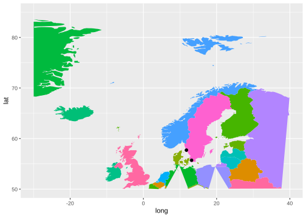
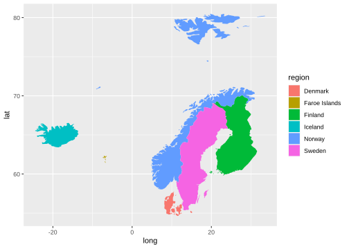
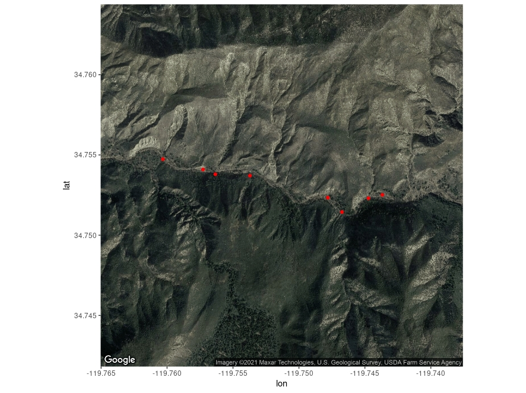
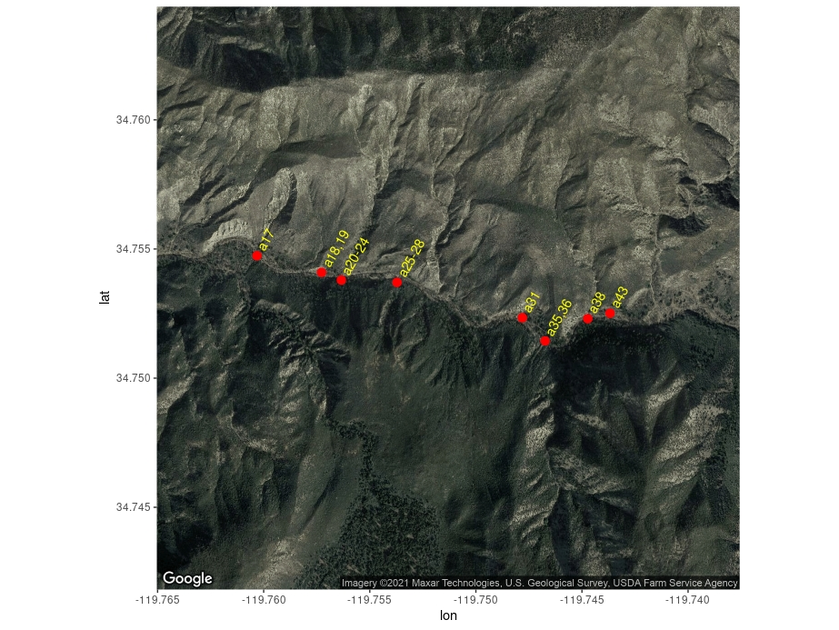
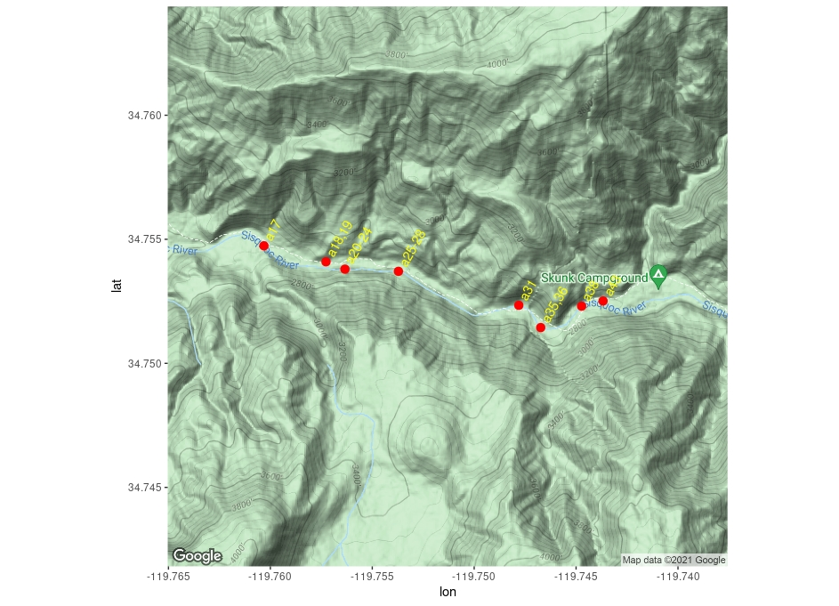
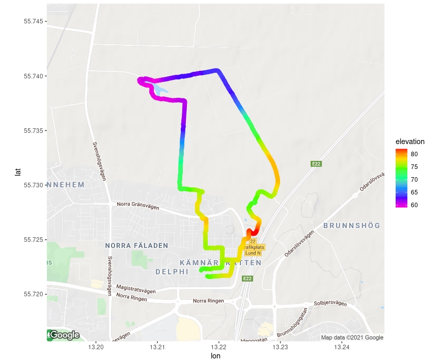
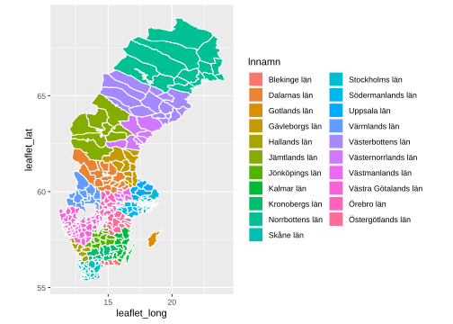
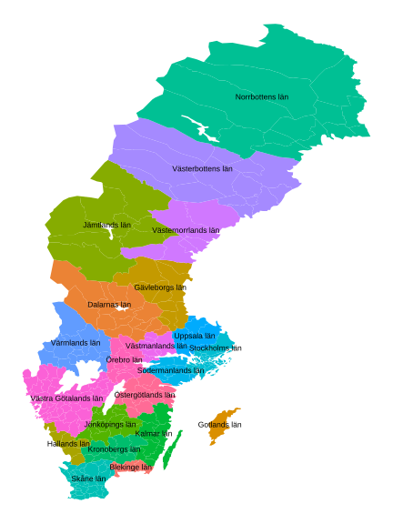
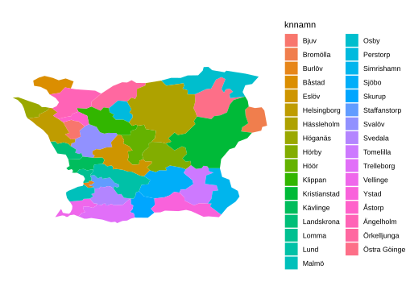

Lokesh Mano • 14-Apr-2022
1 Making maps with R
To do this exercise, we will use a separate dataset and it can be downloaded here.
If you would like to keep the data tree same as the exercises here, you can extract the zip file inside the data directory. So, the file tree would like this:
- ggplot_geneco_course
- data
- archaea_nexus.txt
- arch_newick.txt
- counts_deseq2.txt
- counts_filtered.txt
- counts_raw.txt
- counts_vst.txt
- human_biomaRt_annotation.csv
- metadata.csv
- Time_t24_vs_t0.txt
- Time_t2_vs_t0.txt
- Time_t6_vs_t0.txt
- tree_env.tsv
- tree_hmap.tsv
- ggmap_data
- running.csv
- sisquoc-points.txt
- world_population.tsv
- data
Before we go into ggmap package and its options, let us take a quick look about some of the other options available for making maps in R.
1.1 maps and mapdata
Here we will see, how some of the traditional R packages maps and mapdata were used and how we could implement the information from these packages into ggplot. Some pointers about these packages are:
- The maps package contains a lot of outlines of continents, countries, states, and counties that have been with R for a long time.
- The mapdata package contains a few more, higher-resolution outlines.
- The maps package comes with a plotting function, but, we will opt to use ggplot2 to plot the maps in the maps package.
- Recall that ggplot2 operates on data frames. Therefore we need some way to translate the maps data into a data frame format the ggplot can use.
Let us start with how to install these packages and look at their simple functions:
if (!requireNamespace("maps", quietly = TRUE)){
install.packages("maps", dependencies = TRUE)
}
if (!requireNamespace("mapdata", quietly = TRUE)){
install.packages("mapdata", dependencies = TRUE)
}library(maps)
library(mapdata)
library(ggplot2)
library(dplyr)
library(reshape2)
library(tidyverse)
world <- map_data("world")
head(world)output
## long lat group order region subregion
## 1 -69.89912 12.45200 1 1 Aruba <NA>
## 2 -69.89571 12.42300 1 2 Aruba <NA>
## 3 -69.94219 12.43853 1 3 Aruba <NA>
## 4 -70.00415 12.50049 1 4 Aruba <NA>
## 5 -70.06612 12.54697 1 5 Aruba <NA>
## 6 -70.05088 12.59707 1 6 Aruba <NA>The structure of this data-set could be explained as follows:
longis longitude. Things to the west of the prime meridian are negative.latis latitude.order: This just shows in which order ggplot should “connect the dots”regionandsubregiontell what region or subregion a set of points surrounds.group: This is very important! ggplot2’s functions can take a group argument which controls (amongst other things) whether adjacent points should be connected by lines. If they are in the same group, then they get connected, but if they are in different groups then they don’t.- Essentially, having to points in different groups means that ggplot “lifts the pen” when going between them.
To plot the map, in a pretty way:
gg1 <- ggplot(data = world, aes(x=long, y = lat)) +
geom_polygon(aes(group = group)) +
theme(legend.position = "none")
gg1plot

Note New Zealand was not missed in this map ;)
- Maps in this format can be plotted with the polygon geom. i.e. using geom_polygon().
geom_polygon()drawn lines between points and “closes them up” (i.e. draws a line from the last point back to the first point)- You have to map the group aesthetic to the group column
- Of course, x = long and y = lat are the other aesthetics.
You can test it out how the data looks like without using the group aesthetic
gg1 <- ggplot(data = world, aes(x=long, y = lat)) +
geom_polygon() +
theme(legend.position = "none")
gg1From the dataset we have, we can also draw the border lines representing the different countries based on the variable region.
gg2 <- ggplot(data = world, aes(x=long, y = lat)) +
geom_polygon(aes(group = group, fill = region)) +
theme(legend.position = "none")
gg2plot

1.1.1 Adding points to map
Now, in this huge map, let us try to add some points like our favourite city Lund and few others.
labs <- data.frame(
long = c(13.1629767,11.7537556,16.3100205,80.0689272),
lat = c(55.7068448,57.7010982,48.220778,13.0478223),
names = c("LUND", "GBG", "Vienna", "Chennai"),
stringsAsFactors = FALSE
)
gg2 +
geom_point(data = labs, aes(x = long, y = lat), color = "black", size = 2) plot

Note You can also import the points from a file and store in a data frame.
1.1.2 Zooming in
Unlike in normal ggplots, to zoom into a section of the map, if we try to use the xlim() and ylim() functions:
gg2 +
geom_point(data = labs, aes(x = long, y = lat), color = "black", size = 2) +
xlim(c(-30,40)) +
ylim(c(50,85))plot

You can see that this subsection of the map is not very good, you can notice it especially in the area of Germany and Poland. This is because the latitude and longtitude does not really work like axes on a plot and the structure of the data-set we have here doesn’t support it that way.
We will go through a function in ggmap to get one of the nicer ways to get a subsection in those measures. But, with the data we have here, it is possible get a subset of countries:
scandic <- subset(world, region %in% c("Sweden", "Denmark", "Norway", "Finland", "Iceland", "Faroe Islands"))
gg_scan <- ggplot(data = scandic, aes(x=long, y=lat)) +
geom_polygon(aes(group = group, fill = region))
gg_scanplot

1.1.3 Continous data
Let’s see how we can add a continous data like the World population statistics on to the above map. We can do this by importing the file with the population information and join it to the data set, we have with left_join()
pop_info <- read.table("data/ggmap_data/world_population.tsv", header = T, row.names = 1, sep = "\t")
head(pop_info)output
## region PopMale PopFemale PopTotal PopDensity
## 1 Afghanistan 19976.26 18952.08 38928.34 59.627
## 2 Africa 669878.34 670719.77 1340598.11 45.216
## 3 African Group 668995.56 669831.03 1338826.59 45.571
## 4 African Union 669307.82 670116.10 1339423.92 45.182
## 5 African Union: Central Africa 79260.91 79358.73 158619.64 30.066
## 6 African Union: Eastern Africa 195662.62 196901.05 392563.67 61.404Note Here the values are in the unit of thousands.
world_pop <- left_join(world, pop_info, by = "region")
gg_pop <- ggplot(data = world_pop, aes(x=long, y = lat, group = group, fill =PopTotal))
gg_pop + geom_polygon(color = "white") +
scale_fill_gradientn(colours = rev(rainbow(8)))plot

2 ggmap
ggmap is an R package that makes it easy to retrieve raster map tiles from popular online mapping services like Google Maps and Stamen Maps and plot them using the ggplot2 framework:
You can find more information about the R package here
2.1 How ggmap works
- ggmap simplifies the process of downloading base maps from Google or Open Street Maps or Stamen Maps to use in the background of your plots.
- It also sets the axis scales, etc, in a nice way.
- Once you have gotten your maps, you make a call with
ggmap()much as you would withggplot()
The ggmap() related tutorials here requires that you need to register for an API with google to be able to do this! Follow the instructions below to get an API:
Note To use Google maps, it is necessary to get an API key from google for your account and then register for an API key for example for a free trail. They might ask for your credit-card information! Then under credentials you should be able to find your API key and copy it. Then after lpading ggmap package in your R, you should able to register the key using the function register_google().
2.2 Discrete data
if (!requireNamespace("ggmap", quietly = TRUE)){
install.packages("ggmap", dependencies = TRUE)
}
library(ggmap)
register_google(<INSERT YOUR PERSONAL KEY HERE>)sisquoc <- read.table("data/ggmap_data/sisquoc-points.txt", sep = "\t", header = TRUE)
head(sisquoc)output
## name lon lat
## 1 a17 -119.7603 34.75474
## 2 a20-24 -119.7563 34.75380
## 3 a25-28 -119.7537 34.75371
## 4 a18,19 -119.7573 34.75409
## 5 a35,36 -119.7467 34.75144
## 6 a31 -119.7478 34.75234 Note ggmap tends to use “lon” instead of “long” for longitude.
Now that we have the zoom region we are after, we can get the map from “google” using the get_map() function. Then plot the points on the river from the data using geom_point()
get_map() function requires:
location: for which I prefer to give a centroid location meaning like one location point with latitude and longtitude. So, here one could take the mean of all the latitude and longtitude values.maptypeandsource: This is more upto your taste. You can find all the different options by?get_map()zoom: This typically from the center point how much zoom do you need to acquire: In google maps, this is in the range of 3 (to a continent) to 21 (a house)
ll_means <- sapply(sisquoc[2:3], mean)
sq_map2 <- get_map(location = as.array(ll_means), maptype = "satellite", source = "google", zoom = 15)
ggmap(sq_map2) + geom_point(data = sisquoc, mapping = aes(x = lon, y = lat), color = "red") 
In here, we just managed to get an average of all the latitudes and the longtiudes in our data points that would give a centroid value and grabbed the map around the centroid.
Here we can also add some more information around these points
ggmap(sq_map2) +
geom_point(data = sisquoc, mapping = aes(x = lon, y = lat), color = "red", size = 3) +
geom_text(data = sisquoc, aes(x = lon, y = lat, label = paste(" ", as.character(name), sep="")), angle = 60, hjust = 0, color = "yellow")
How about if we use the “terrain” type of map:
sq_map3 <- get_map(location = ll_means, maptype = "terrain", source = "google", zoom = 15)
ggmap(sq_map3) +
geom_point(data = sisquoc, mapping = aes(x = lon, y = lat), color = "red", size = 3) +
geom_text(data = sisquoc, aes(x = lon, y = lat, label = paste(" ", as.character(name), sep="")), angle = 60, hjust = 0, color = "yellow")
2.3 Continous data
Let us take the data points from a bike ride and see how we can plot it better:
run_df <- read.csv("data/ggmap_data/running.csv")
head(run_df)output
## lat lon elevation time
## 1 55.72165 13.21811 74.2 2016-07-21T14:54:18Z
## 2 55.72163 13.21827 74.3 2016-07-21T14:54:27Z
## 3 55.72161 13.21841 74.4 2016-07-21T14:54:30Z
## 4 55.72159 13.21858 74.4 2016-07-21T14:54:33Z
## 5 55.72160 13.21877 74.5 2016-07-21T14:54:37Z
## 6 55.72165 13.21890 74.6 2016-07-21T14:54:40ZNow let us try to plot the data:
run_means <- sapply(run_df[1:2], mean)
runmap1 <- get_map(location = run_means, maptype = "terrain", source = "google", zoom = 14)
ggmap(runmap1) +
geom_path(data = run_df, aes(x = lon, y = lat, color = elevation), size = 3, lineend = "round") +
scale_color_gradientn(colours = rev(rainbow(7)))
Note getting the right zoom and position for the map is sort of trial and error. You can go to google maps to figure out where the center should be (right click and choose “What’s here?” to get the lat-long of any point)
3 Swedish map
I found one of the simplest Swedish maps that could be used in R from Reinholdsson’s GitHub page Here, I will show you how to install it in your R and then how to use it! This package gives you the map-data for Sweden like the one we had with the world-map. The dtasets that are included are:
map_ln: regions polygon datamap_kn: municipalities polygon datacent_ln: regions centroids datacent_kn: municipalities centroids data
3.1 Map data-sets
Let us take a quick look on how the map_ln data looks like:
if (!requireNamespace("devtools", quietly = TRUE)){
install.packages("devtools", dependencies = TRUE)
}
if (!requireNamespace("swemaps", quietly = TRUE)){
devtools::install_github("reinholdsson/swemaps", dependencies = TRUE)
}library(swemaps)
head(map_ln)output
## lnkod order piece group ggplot_long ggplot_lat leaflet_long leaflet_lat
## 1 0001 1 1 0.1 674300.8 6580047 18.06328 59.32317
## 2 0001 2 1 0.1 674495.0 6581094 18.06754 59.33248
## 3 0001 3 1 0.1 673269.9 6580797 18.04579 59.33032
## 4 0001 4 1 0.1 672305.9 6580724 18.02882 59.33006
## 5 0001 5 1 0.1 671274.1 6581212 18.01110 59.33486
## 6 0001 6 1 0.1 670197.8 6582411 17.99315 59.34605
## lnnamn landareakm
## 1 Stockholms län 6487.9
## 2 Stockholms län 6487.9
## 3 Stockholms län 6487.9
## 4 Stockholms län 6487.9
## 5 Stockholms län 6487.9
## 6 Stockholms län 6487.9And the map_kn data:
head(map_kn)output
## knkod order piece group ggplot_long ggplot_lat leaflet_long leaflet_lat lnkod
## 1 0114 1 1 0.1 665734.0 6599286 17.92782 59.49916 0001
## 2 0114 2 1 0.1 664503.5 6598352 17.90539 59.49127 0001
## 3 0114 3 1 0.1 663096.4 6598467 17.88067 59.49285 0001
## 4 0114 4 1 0.1 662865.2 6597495 17.87585 59.48422 0001
## 5 0114 5 1 0.1 660757.5 6596513 17.83794 59.47623 0001
## 6 0114 6 1 0.1 660952.3 6598920 17.84319 59.49774 0001
## knnamn lnnamn landareakm
## 1 Upplands Väsby Stockholms län 75.4
## 2 Upplands Väsby Stockholms län 75.4
## 3 Upplands Väsby Stockholms län 75.4
## 4 Upplands Väsby Stockholms län 75.4
## 5 Upplands Väsby Stockholms län 75.4
## 6 Upplands Väsby Stockholms län 75.4It is quite clear from the beginning that map_kn is more detailed than the map_ln, as expected.
gg_swe <- ggplot(data = map_kn, aes(x=leaflet_long, y = leaflet_lat)) +
geom_polygon(aes(group = group, fill = lnnamn), color = "white") +
coord_fixed(1.5)
gg_sweplot

Note Here we use coord_fixed() for the first time, this is to control the dimentions of the axis to keep the map for in a proper shape than make it looked streched in one axis or the other.
3.2 centroid data-sets
Let us take a quick look on how and what actually is the cent_ln data contain.
Here, let us take cent_ln for example:
head(cent_ln)output
## lnkod ggplot_long ggplot_lat leaflet_long leaflet_lat lnnamn
## 1 0001 688467.8 6624421 18.35107 59.71489 Stockholms län
## 2 0003 644137.1 6661613 17.58976 60.06625 Uppsala län
## 3 0004 596461.6 6548892 16.68244 59.06848 Södermanlands län
## 4 0005 541011.9 6469637 15.70100 58.36568 Östergötlands län
## 5 0006 464673.6 6375090 14.41027 57.51698 Jönköpings län
## 6 0007 473304.1 6295472 14.56286 56.80237 Kronobergs länAs you can see, it is basically the centroid points of each of the län. And similarly, cent_kn contains the centroids of each kommun. We can for example use this datasets in this way:
gg_cen <- ggplot() +
geom_polygon(data = map_kn, aes(x=leaflet_long, y = leaflet_lat, group = group, fill = lnnamn)) +
coord_fixed(1.3) +
geom_text(data = cent_ln, aes(x=leaflet_long, y = leaflet_lat, label = lnnamn), color = "black", size = 3) +
theme(legend.position = "none") +
theme_nothing()
gg_cenplot

Note It is important to remember that when you use multiple datsets, you can initate the plot by just ggplot() and add the “data” and “aesthetics” in each of the geoms you are plotting.
3.3 Particular region
Now, similar to world-map let us try to extract a particular län, like our “Skåne”.
scania <- subset(map_kn, lnnamn %in% c("Skåne län"))
gg_scania <- ggplot(data = scania, aes(x=leaflet_long, y=leaflet_lat)) +
geom_polygon(aes(group = group, fill = knnamn)) +
coord_fixed(1.1) +
theme_void()
gg_scaniaplot

4 Interactive maps
Here I will show a quick demo of how to make interactive maps in R based on a package called leaflet. This is the reason why swemaps had the labels leaflet_long and leaflet_lat.
There is quite a lot of things you can do with this! You can follow the tutorial here. But here I will show you some of the very simple things.
if (!requireNamespace("leaflet", quietly = TRUE)){
devtools::install_github("rstudio/leaflet", dependencies = TRUE)
}library(leaflet)
m <- leaflet() %>% setView(lng = 13.1914692, lat = 55.7040588, zoom = 12)
m %>% addTiles()4.1 Discrete data
Now let us add some data to these maps. Let us first look into the discrete data that we have.
m <- leaflet(data = sisquoc) %>% setView(lng = -119.75132, lat = 34.75312, zoom = 15)
m %>% addTiles() %>%
addMarkers(~lon, ~lat, popup = ~as.character(name), label = ~as.character(name))Now let us see if we can make it look prettier:
m <- leaflet(data = sisquoc) %>% setView(lng = -119.75132, lat = 34.75312, zoom = 15)
m %>% addProviderTiles(providers$Esri.NatGeoWorldMap) %>%
addMarkers(~lon, ~lat, popup = ~as.character(name), label = ~as.character(name)) Note Here you can choose the different kinds of base maps available from the function addProviderTiles()
4.2 Continous data
Let us see, if we can add the GPS recordings to in a similar interactive map.
m <- leaflet(data = run_df) %>% setView(lng = 13.21943, lat = 55.73118, zoom = 14)
m %>% addProviderTiles(providers$CartoDB.Voyager) %>%
addPolylines(~lon, ~lat)Now, let us try to make something pretty with it.
m <- leaflet(data = run_df) %>% setView(lng = 13.21943, lat = 55.73118, zoom = 14)
m %>% addProviderTiles(providers$CartoDB.Voyager) %>%
addPolylines(~lon, ~lat, color = "blue") %>%
addCircleMarkers(data = run_df[1,], ~lon, ~lat, stroke = FALSE, fillOpacity = 0.5, label = "Start", color = "green") %>%
addCircleMarkers(data = run_df[667,], ~lon, ~lat, stroke = FALSE, fillOpacity = 0.5, label = "End", color = "red") %>%
addMarkers(data = run_df[seq(50,667, 50), ], ~lon, ~lat, popup = ~as.character(elevation), label = ~as.character(time)) Note Here I have used seq() function to create a sequence of numbers to pick up the GPS positions from equal intervals. Then using that function I subset the dataframe run_df in the last line of the command above. In the addCircleMarkers() function I only used the first and the last line of the dataframe to specify the start and the end.
5 Session info
sessionInfo()## R version 4.1.3 (2022-03-10)
## Platform: x86_64-pc-linux-gnu (64-bit)
## Running under: Ubuntu 18.04.6 LTS
##
## Matrix products: default
## BLAS: /usr/lib/x86_64-linux-gnu/openblas/libblas.so.3
## LAPACK: /usr/lib/x86_64-linux-gnu/libopenblasp-r0.2.20.so
##
## locale:
## [1] LC_CTYPE=C.UTF-8 LC_NUMERIC=C LC_TIME=C.UTF-8
## [4] LC_COLLATE=C.UTF-8 LC_MONETARY=C.UTF-8 LC_MESSAGES=C.UTF-8
## [7] LC_PAPER=C.UTF-8 LC_NAME=C LC_ADDRESS=C
## [10] LC_TELEPHONE=C LC_MEASUREMENT=C.UTF-8 LC_IDENTIFICATION=C
##
## attached base packages:
## [1] stats graphics grDevices utils datasets methods base
##
## other attached packages:
## [1] swemaps_1.0 mapdata_2.3.0 maps_3.4.0
## [4] ggpubr_0.4.0 cowplot_1.1.1 ggthemes_4.2.4
## [7] scales_1.2.0 ggrepel_0.9.1 wesanderson_0.3.6
## [10] forcats_0.5.1 stringr_1.4.0 purrr_0.3.4
## [13] readr_2.1.2 tidyr_1.2.0 tibble_3.1.6
## [16] tidyverse_1.3.1 reshape2_1.4.4 ggplot2_3.3.5
## [19] formattable_0.2.1 kableExtra_1.3.4 dplyr_1.0.8
## [22] lubridate_1.8.0 leaflet_2.1.1 yaml_2.3.5
## [25] fontawesome_0.2.2.9000 captioner_2.2.3 bookdown_0.25
## [28] knitr_1.38
##
## loaded via a namespace (and not attached):
## [1] nlme_3.1-155 fs_1.5.2 webshot_0.5.2
## [4] httr_1.4.2 tools_4.1.3 backports_1.4.1
## [7] bslib_0.3.1 utf8_1.2.2 R6_2.5.1
## [10] DBI_1.1.2 mgcv_1.8-39 colorspace_2.0-3
## [13] withr_2.5.0 gridExtra_2.3 tidyselect_1.1.2
## [16] compiler_4.1.3 cli_3.2.0 rvest_1.0.2
## [19] xml2_1.3.3 labeling_0.4.2 sass_0.4.1
## [22] systemfonts_1.0.4 digest_0.6.29 rmarkdown_2.13
## [25] svglite_2.1.0 pkgconfig_2.0.3 htmltools_0.5.2
## [28] dbplyr_2.1.1 fastmap_1.1.0 highr_0.9
## [31] htmlwidgets_1.5.4 rlang_1.0.2 readxl_1.4.0
## [34] rstudioapi_0.13 jquerylib_0.1.4 farver_2.1.0
## [37] generics_0.1.2 jsonlite_1.8.0 crosstalk_1.2.0
## [40] car_3.0-12 magrittr_2.0.3 Matrix_1.4-0
## [43] Rcpp_1.0.8.3 munsell_0.5.0 fansi_1.0.3
## [46] abind_1.4-5 lifecycle_1.0.1 stringi_1.7.6
## [49] carData_3.0-5 plyr_1.8.7 grid_4.1.3
## [52] crayon_1.5.1 lattice_0.20-45 haven_2.4.3
## [55] splines_4.1.3 hms_1.1.1 pillar_1.7.0
## [58] ggsignif_0.6.3 reprex_2.0.1 glue_1.6.2
## [61] evaluate_0.15 leaflet.providers_1.9.0 modelr_0.1.8
## [64] vctrs_0.4.1 tzdb_0.3.0 cellranger_1.1.0
## [67] gtable_0.3.0 assertthat_0.2.1 xfun_0.30
## [70] broom_0.8.0 rstatix_0.7.0 viridisLite_0.4.0
## [73] ellipsis_0.3.2